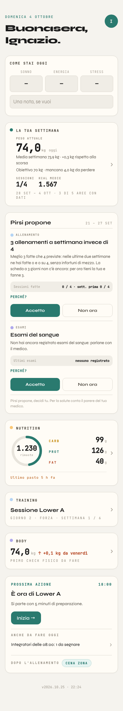

Una tavola sola per decidere l'aspetto di tutta l'app prima di toccare le pagine: la Home prima e dopo, le testate delle quattro zone in due proposte e le regole comuni.
Cambia solo l'aspetto, non cosa fa la pagina. I numeri gialli 1 segnano le cose da snellire nel giro 2: segnate, non fatte.
Proposta mostrata nella Home qui sotto:
1 DI 3La Home, prima e dopo
A sinistra la Home vera, fotografata a 390 px con dati di prova (il 4 ottobre, sera). A destra la stessa Home vestita: testata della zona Home, riquadri a colori come i widget dell'iPhone, elenchi a righe, barra in basso.
I contenuti, l'ordine e i tasti sono quelli di oggi.
Oggi

Proposta
Domenica 4 ottobre
I
Buonasera, Ignazio
Come stai oggi
SONNO–
ENERGIA–
STRESS–
Una nota, se vuoi
La tua settimana · 28 set – 4 ott
Peso attualemedia 73,9 kg · +0,3 kg sulla scorsa74,0 kg›
Obiettivomancano 4,0 kg70 kg›
Sessioni1 / 4›
Kcal medie 11.567›
Pirsi propone · 21 – 27 set 2
ALLENAMENTI3 allenamenti a settimana invece di 4
Nelle ultime due settimane ne hai fatte 0 e 0 su 4, senza infortuni di mezzo.
ESAMIEsami del sangue
Non hai ancora registrato esami del sangue: parlane con il medico.
Le tue zone
NUTRITION
1.230 kcal rimaste
CARB99 gPROT126 gFAT40 g
Ultimo pasto 5 h fa
TRAINING
Lower A
Giorno 2 · Forza
settimana 1 di 6
BODY
74,0 kg
↑ +0,1 da venerdì
check da fare 3
Prossima azione · 18:00 4
È ora di Lower ASi parte con 5 minuti di preparazione
Integratori delle 08:001 da segnare›
Dopo l'allenamentocena zona›
Home
Nutrition
Training
Body
Cosa cambia nell'aspetto
La data e il saluto vanno nella testata della zona Home, con l'insetto del feedback e l'iniziale (le Impostazioni) in alto a destra.
«La tua settimana» e «Prossima azione» diventano elenchi a righe: nome a sinistra, valore a destra, freccia.
Nutrition, Training e Body diventano riquadri pieni del colore della loro zona, come i widget dell'iPhone e «Oggi» di MB21.
Le proposte di Pirsi stanno in un gruppo solo, con il pallino del colore della zona di cui parlano.
La barra in basso compare anche in Home.
Da snellire nel giro 2
«La tua settimana» ripete il peso che c'è già nel riquadro Body.
Le proposte di Pirsi hanno testi lunghi e un «Perché?» ciascuna: una riga e il resto al tocco.
«Primo check fisico da fare» potrebbe essere un promemoria di «Prossima azione».
«Prossima azione» oggi è in fondo: forse va in cima, è la cosa da fare adesso.
2 DI 3Le quattro testate
Ogni pagina comincia con la testata della sua zona: in alto il ritorno (o niente, nelle pagine della barra), il feedback; sotto un sopratitolo, il titolo e, se servono, le schede della pagina. Contrasti misurati con la formula WCAG fra scritta e fondo: il minimo per il testo è 4,5:1.
A · colori pieni, scritte bianche come MB21
Domenica 4 ottobreI
Buonasera
--z-home: #2A7A6F l'evergreen di oggi (--acc) bianco sopra: 5,11:1
Oggi · 1.230 rimaste‹
Nutrition
OggiIntegr.AnalisiPiano
--z-nutrition: #A35F00 ambra scura: con l'ambra chiara il bianco non si legge bianco sopra: 5,01:1
Settimana 1 di 6‹
Training
ProgrammaProgressione
--z-training: #2E6DA4 blu pieno bianco sopra: 5,47:1
74,0 kg · oggi‹
Body
MisureTendenzaCheck
--z-body: #6A55A0 viola pieno (il --mod-body-forte #5E4A7A resta ai checkpoint) bianco sopra: 6,14:1
B · tinte chiare di oggi, scritte scure l'aspetto di adesso, più forte
--z-nutrition: #FAC775 = --mod-nutrition di oggi #1A1A1A sopra: 11,2:1
Settimana 1 di 6‹
Training
ProgrammaProgressione
--z-training: #B5D4F4 = --mod-training di oggi #1A1A1A sopra: 11,3:1
74,0 kg · oggi‹
Body
MisureTendenzaCheck
--z-body: #AFA9EC = --mod-body di oggi #1A1A1A sopra: 8,05:1
I nomi da mettere in :root
/* il colore di zona: testate, riquadri della Home, tasto principale della zona */
--z-home · --z-nutrition · --z-training · --z-body → A: #2A7A6F #A35F00 #2E6DA4 #6A55A0 · B: #A8D8CF #FAC775 #B5D4F4 #AFA9EC
--z-testo → A: #FFFFFF · B: #1A1A1A (= --t1) /* uguali in A e in B */
--z-home-velo · --z-nutrition-velo · --z-training-velo · --z-body-velo → #E6F4F2 #FDF1DA #EAF2FB #EFEDFA (fondino della voce accesa nella barra, pallini, suggerimenti)
--z-home-scuro · --z-nutrition-scuro · --z-training-scuro · --z-body-scuro → #1F5C53 #7A4000 #1F4F7A #4A3A78 (scritte di zona su fondo chiaro: sul loro velo da 6,85:1 a 8,38:1) /* restano come sono */ --acc, --mod-nutrition, --mod-training, --mod-body, --mod-body-forte e tutti gli altri nomi di app/stile.css
3 DI 3Le regole comuni, una volta sola
Valgono per tutte le pagine. Le misure sono quelle del disegno; con il sì diventano nomi in app/stile.css e una riga in docs/STILE.md.
Barra in basso
Quattro voci, sempre le stesse: Home · Nutrition · Training · Body. Quella aperta prende il velo e la scritta scura della sua zona; le altre restano grigie. Nelle pagine fuori dalla barra (Impostazioni, fogli) resta accesa la zona da cui si arriva.
Home
Nutrition
Training
Body
voce spenta: --t2 #555047 (il grigio --t3 sul bianco fa solo 3,0:1) · accesa: --z-…-scuro su --z-…-velo · icona 21 px, scritta 11 px · fondo bianco, angoli 22 px in alto · l'insetto del feedback sta sopra la barra, come oggi
Elenchi a righe
Come le Impostazioni dell'iPhone: gruppi bianchi con angoli tondi, il titolo del gruppo sopra in maiuscoletto, righe alte almeno 48 px.
Due sole: il riquadro di zona pieno (solo in Home, uno per zona) e la card bianca per tutto il resto. Niente bordi colorati, niente ombre forti.
TRAINING
Lower A
Giorno 2
CARD BIANCA
Titolo
Una riga di testo.
riquadro: --z-… pieno, --z-testo, angoli 18 px · card: --s1, angoli 18 px, filo --b1 sotto
Tasto principale
Uno per schermata, a tutta larghezza in fondo quando è l'azione della pagina («Salva serie», «Fine serie»). Nella pagina di una zona prende il colore della zona; altrove l'evergreen. Il secondo tasto è grigio chiaro.
Syne 700 15–18 px · alto almeno 48 px · angoli 14–16 px · mai due tasti pieni affiancati
Campi
Etichetta sopra in maiuscoletto, campo bianco con filo, al tocco il filo evergreen e un alone chiaro. I numeri in mono.
Testo a 15 px (oggi, per esempio la nota del check: .m1-field-textarea)
Scrivi una nota
Testo a 16 px
Scrivi una nota
Decisione aperta di Ignazio. Su iPhone, quando si tocca un campo con il testo sotto i 16 px, Safari ingrandisce la pagina e poi la lascia ingrandita. Con tutti i campi a 16 px non succede più. Il costo: testo un po' più grande dentro i campi, solo lì.